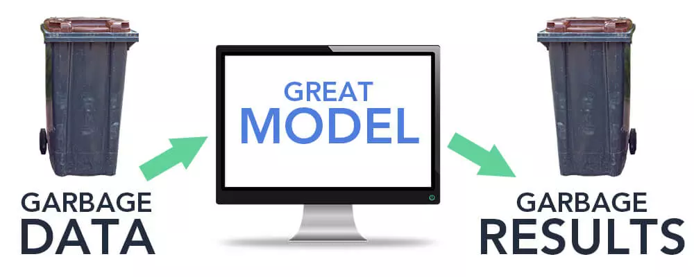

Suprising enough Charles Babbage's work is still relevant today even though we own
far more complex and better computers and calculators today. The reason is because even
though the computers evolve by time there are things problems that computers can't solve
no matter how fast they are. Babbage has a famous quote "On two occasions I have been asked,
'Pray, Mr. Babbage, if you put into the machine wrong figures, will the right answers come
out?' I am not able rightly to apprehend the kind of confusion of ideas that could provoke such a question. - Charles Babbage"
which explains the Garbage Input Garbage Output (GIGO) concept in computer sciece that is still relevant and used by businesses
since businesses do not collect garbage data to process. This also proves that computer will not always give us the correct value
no matter how fast and powerful a computer is.

Furthermore on the relevance of Babbage's work we can see that his analytical engine had a CPU (Mill) and a RAM (Store) before the era of modern computer began.
The Analytical engine was also turing complete in theory. Even though Babbage did not had enough time to see the first turing complete computer
ENIAC he still knew what turing completeness was and implemented in his theoratical machine. And his research on theory of computing devices helped the
computer scientists after him since computers was not invented immadiatly but was invented by building up knowledge from every person who worked in this field where Babbage was one.
Therefore Babbages work and projects are still relevant today and many computer scientist can still benefit from his theoratical research.